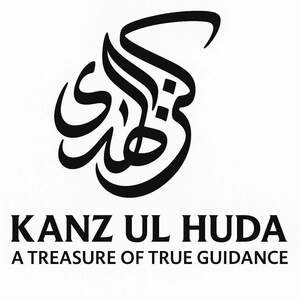

Trade Mark Journal No.2025/036 5 September 2025
UK00004246797 8 August 2025 (9,16,18,25,36,41)

- Class 9
- Computer software; mobile applications.; web applications software; platform software; downloadable digital music; phone accessories & computer accessories,; downloadable or pre-recorded videos; downloadable digital photos.
- Class 16
- Printed matter and publications; books, manuals, brochures, advertising material and educational materials in the fields of religion, journalism, spirituality, science, academia, personal development, motivation, and general self-improvement.
- Class 18
- Bags, rucksacks, travelling bags, handbags, purses, wallets, umbrellas, walking sticks.
- Class 25
- Clothing, headwear, footwear; T-shirts, hoodies, caps, jumpers, scarves, jackets, coats and other branded apparel, islamic clothing & islamic clothing accessories, lapel, badges. .
- Class 36
- Charitable services, organising and conducting fundraising campaigns and donation drives; charitable fundraising through the means of events.
- Class 41
- Provision of online and in person education and training services; religious and non-religious instruction; publication of books and printed, materials in the fields of religion, personal development, motivation, and general education, academia; organising and conducting online and in-person courses, seminars, congregations, workshops and lectures; provision of audio and visual media via communication networks; Digital music [not downloadable] provided from the internet; Digital videos [not downloadable] provided from the internet; Digital pictures [not downloadable] provided from the internet.
KANZ UL HUDA